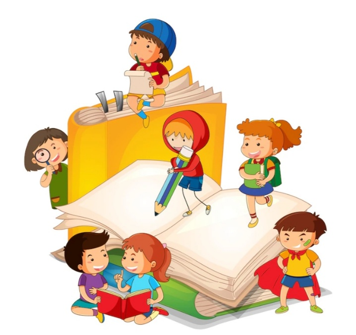

Once upon a time, there was a rabbit who was very proud of himself and thought no one could ever match his running speed. He always made fun of the tortoise for his slow speed. He was so proud of himself that he once challenged the tortoise in front of everyone to participate in a running race with him.They raced, but the rabbit napped, and the tortoise kept going. The tortoise won, teaching us that slow, steady work brings success. The rabbit learned not to underestimate others, and they stayed friends
The Little Seed and the Big Adventure
Once upon a time, in a cozy little garden in Bengaluru, lived a tiny seed named Pip. Pip dreamt of adventures, but he was just a seed, stuck in the earth, waiting for the right time. One day, a gentle rain kissed the garden, and Pip felt a warm, wet feeling. He started to grow, pushing his way up through the soil, his tiny leaves reaching for the sun.
He grew into a beautiful flower, a vibrant yellow sunflower, with a big, happy face. He watched the busy bees buzzing around, the butterflies fluttering by, and the squirrels scampering through the trees. Pip loved his little corner of the garden, but he still yearned for adventure.
One day, a strong wind swept through the garden, and Pip's stem swayed dangerously. He closed his eyes, ready to be swept away, but instead, he felt a gentle hand. It was a kind old woman, watering her flowers. She carefully tied a ribbon around Pip's stem, and he felt safe and secure.
The wind continued to blow, but Pip, with his ribbon, stayed put. He learned that even in the biggest adventures, having a friend nearby could make all the difference. And so, Pip, the little sunflower, continued to bloom, his big face always smiling, happy to be part of the big, beautiful garden, and to share his adventures with everyone around him.
